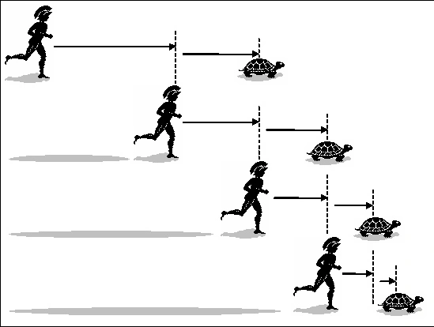

The Evolution of Limit
Sir Isaac Newton (1643–1727) was an English mathematician, physicist, and astronomer recognized as one of the most influential scientists of all time.
To solve fundamental physical problems regarding motion and gravity, Newton invented the Method of Fluxions, establishing an intuitive framework to describe continuous rates of change.


Zeno and the Tortoise
Long before calculus was formalized, Zeno of Elea proposed the famous paradox of Achilles and the Tortoise. He argued that if the tortoise gets a head start, Achilles can never catch up, as he must first reach where the tortoise started.
This highlighted early conceptual difficulties with infinity: an infinite sequence of decreasing time intervals can indeed sum to a finite value.

Cauchy and the ε-δ Language
Augustin-Louis Cauchy (1789–1857) revolutionized analysis by replacing geometric motion with strict algebraic logic, formalizing the modern definition of a limit:
Here, $\varepsilon$ represents target tolerance for $f(x)$, while $\delta$ sets the necessary closeness of $x$ to $c$.